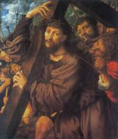
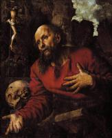
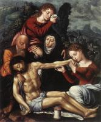

| Богородица с младенцем под виноградной лозой
1528-29
|
|  | Христос, несущий крест
1533
|
 | Суета
1535-40
|
 | Блудный сын
1536
|
 | Юдифь
1540
|
 | Святой Иероним
1543
|
 | Призвание святого Матфея
1548
|
|  | Святой Иероним
1548
|
| Мария Магдалина с лютней
1550
| |
 | Тобиас возвращает зрение своему отцу
1555
|
 | Притча о немилосердном рабе
1556
|
 | Осмеяние Христа
1560
|
|  | Оплакивание Христа
|
 | Богородица и младенец
|
 | Исаак благословляет Иакова
|
 | Снятие с креста
|
| Святой Иероним
|